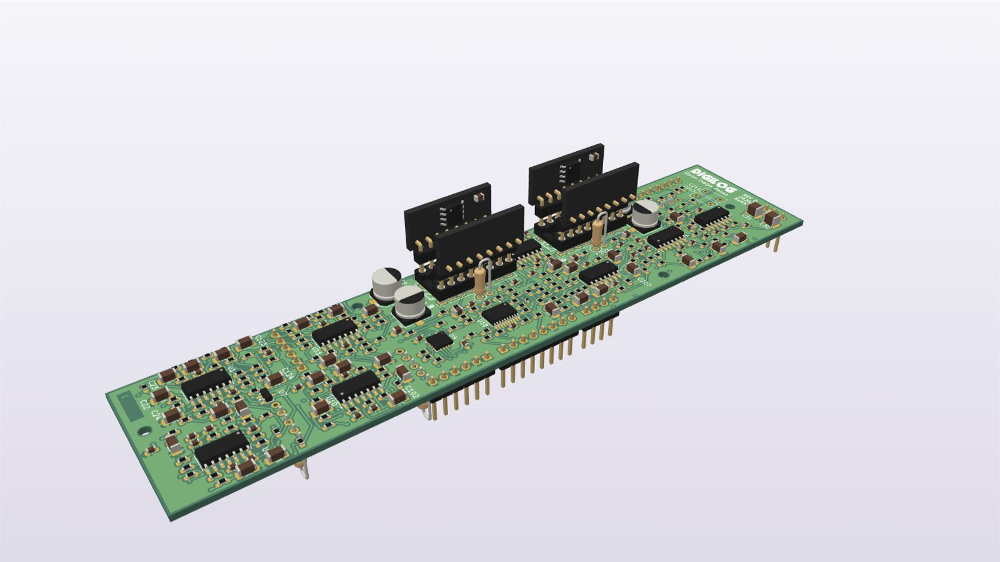
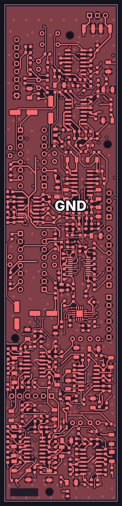
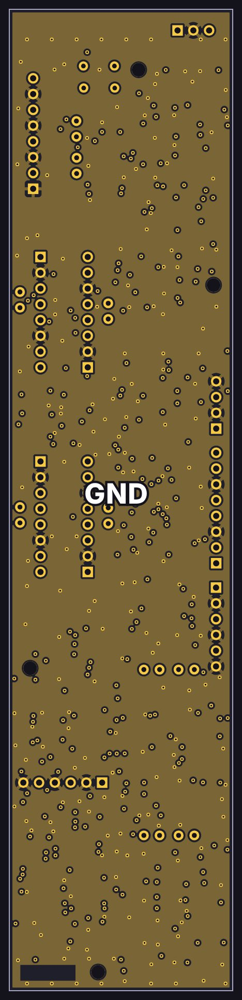
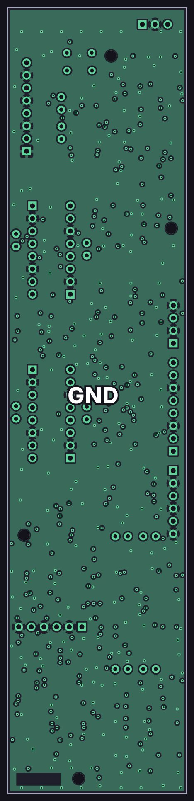
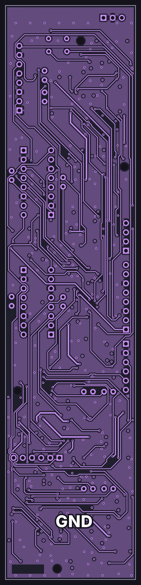
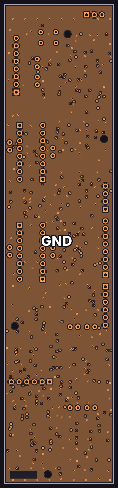
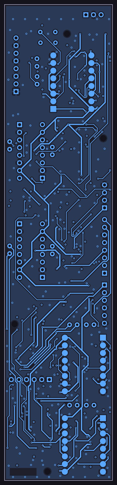
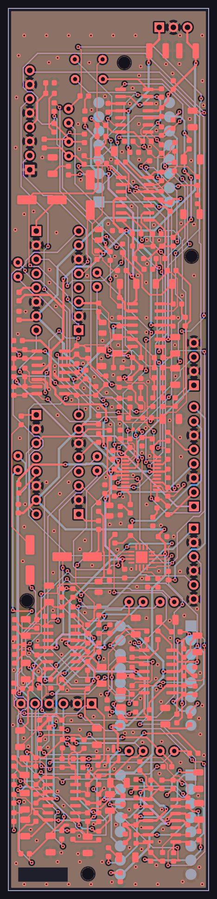

EQ card

How it works
A simplified schematic: just the signal path, with the details left out. Dashed lines are control voltages from the console’s controller.
Design notes
- Four bands in series: LF and HF switch between shelf and bell, and LMF and HMF are bells with variable width.
- Bands: LF 32–590 Hz, LMF 146 Hz–2.68 kHz, HMF 400 Hz–7.37 kHz, HF 1.23–22.7 kHz.
- Every parameter is a control voltage: each band is a state-variable filter whose integrators are tuned by SSI2164 VCA channels, and an AS2180 VCA sets how much of the band is mixed in.
- Frequency and Q follow exponential laws, so equal voltage steps are equal musical intervals.
- Boost or cut is a logic line through an ADG1436, and a cut is the exact mirror of the same boost. 0 V is flat, so the EQ powers up flat.
- The SSI2164s run in class AB, which in simulation was about 8 dB quieter than class A with a band boosted. The class-A resistors are left unfitted.
- Ten 47 kΩ NTC thermistors bonded to the VCAs keep the frequencies and gains steady with temperature.
- The SSI2164s sit on small castellated breakout modules, soldered face-out to the underside of the card.
The copper layers
All 6 copper layers of the board, top to bottom, drawn from the KiCad layout: 3 signal layers and 3 ground planes, labeled GND.
-

Top F.Cu
Signal layer: parts, signal traces and +15 V, −15 V, −2.5 V power traces
-

Inner 1 In1.Cu
Ground plane (GND)
-

Inner 2 In2.Cu
Ground plane (GND)
-

Inner 3 In3.Cu
Signal layer: signal traces and +15 V, −15 V, −2.5 V power traces
-

Inner 4 In4.Cu
Ground plane (GND)
-

Bottom B.Cu
Signal layer: signal traces and +15 V, −15 V, −2.5 V power traces
-

All layers
Every copper layer stacked, top on top
See schematics